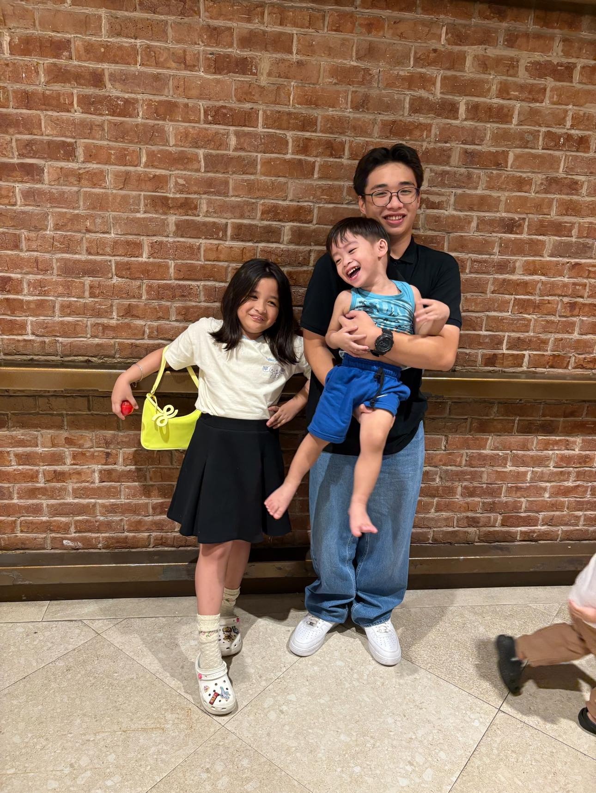

Hello! My name is Elijah Lingat, and I am the creator of this website. I made this space to share my passion for basketball a sport that has inspired me both on and off the court. Here, you will be able to explore the history of basketball, learn about the different NBA teams, and also discover my personal favorite players and teams. I have been playing basketball since I was 10 years old, and ever since then, the game has become a big part of my life. What makes it even more special is that my whole family also shares the same love for the sport. We often watch games together and cheer for our favorite teams.

Sources:
Biography. (n.d.). Biography.
The Editors of Encyclopaedia Britannica. (2025, August 14). James Naismith | Biography, rules of basketball, & Facts. Encyclopedia Britannica.
Petersen, C. (n.d.). Christian Petersen.
Bettmann. (n.d.). Bettmann.
De Haan, A. B. (n.d.). Alex Bierens de Haan.
Elsa. (n.d.). Elsa.
Aguilar, J. (n.d.-b). Julio Aguilar.
Piccotti, T. (2023, August 9). Michael Jordan. Biography.
Kobe Bryant. (2023, October 26). Biography.
Piccotti, T. (2024, July 26). LeBron James. Biography.
Caruso, C. (2025, March 14). Stephen Curry. Biography.
Biography.com Editors. (2023, October 24). Shaquille O Neal. Biography.
Stephen Curry Gif - IceGif. (n.d.). IceGif.
Cassie. (2016, May 18). Nba Playoffs GIF - Find & Share on GIPHY. Pinterest.
Plaschke, B. (2022, March 16). Plaschke: The Lakers must trade LeBron James. Los Angeles Times.
Shearer, M. (2024, June 18). Ranking the finals 11 most important Celtics. Basketball Poetry.